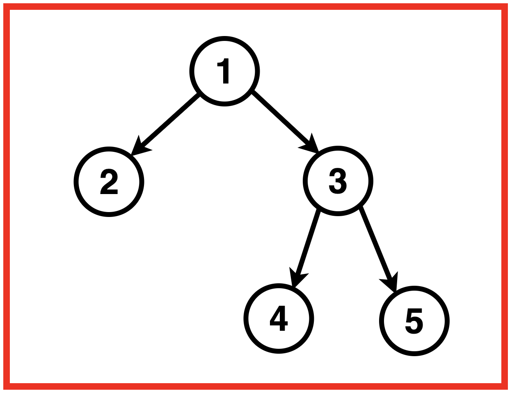
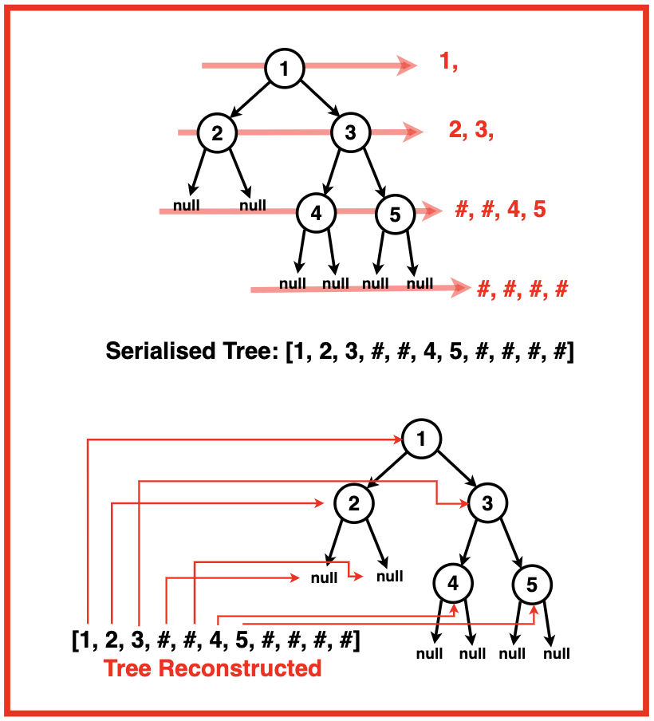
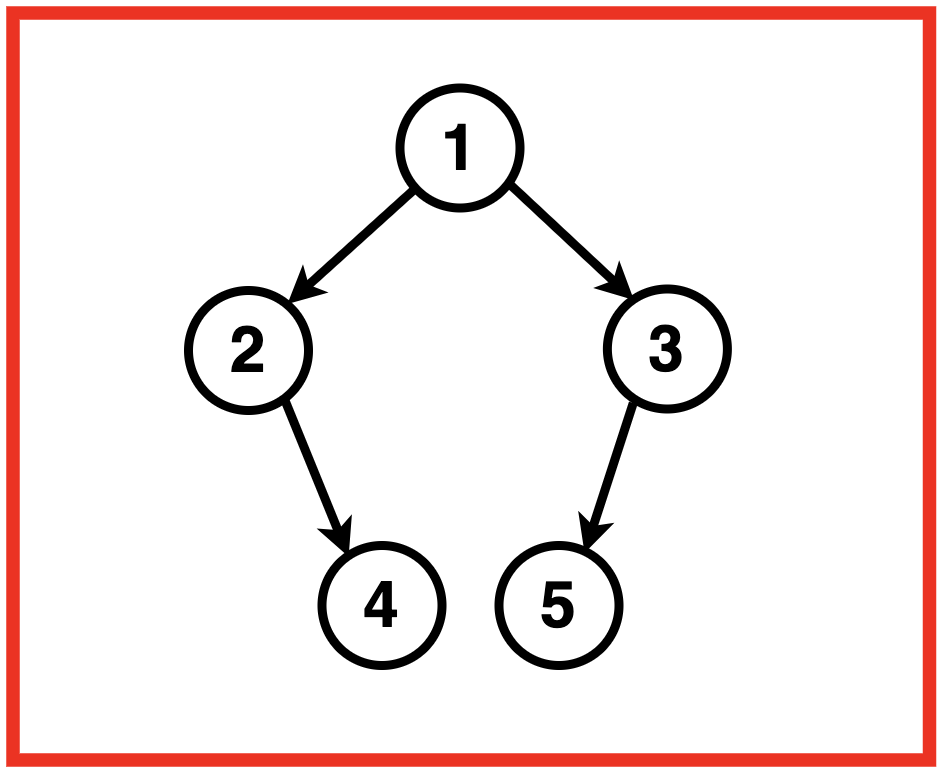
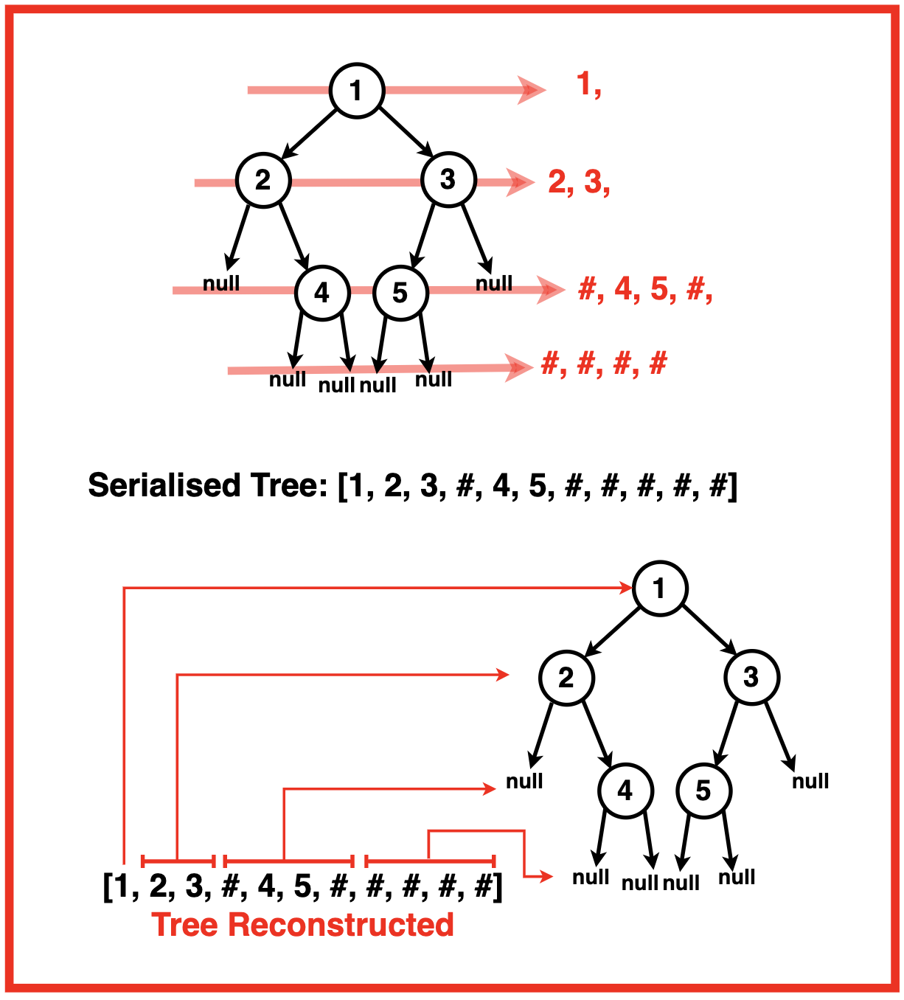
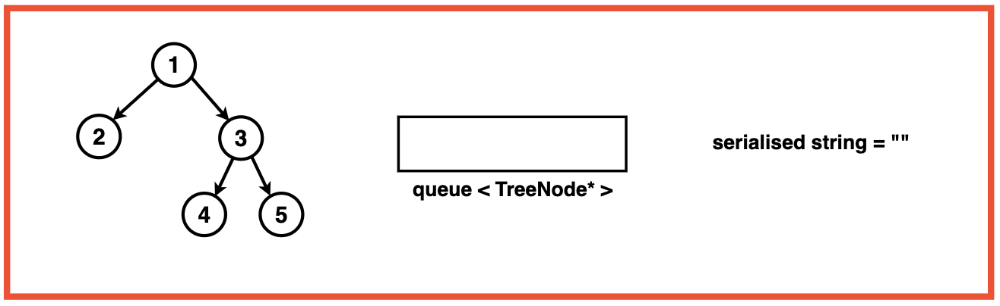
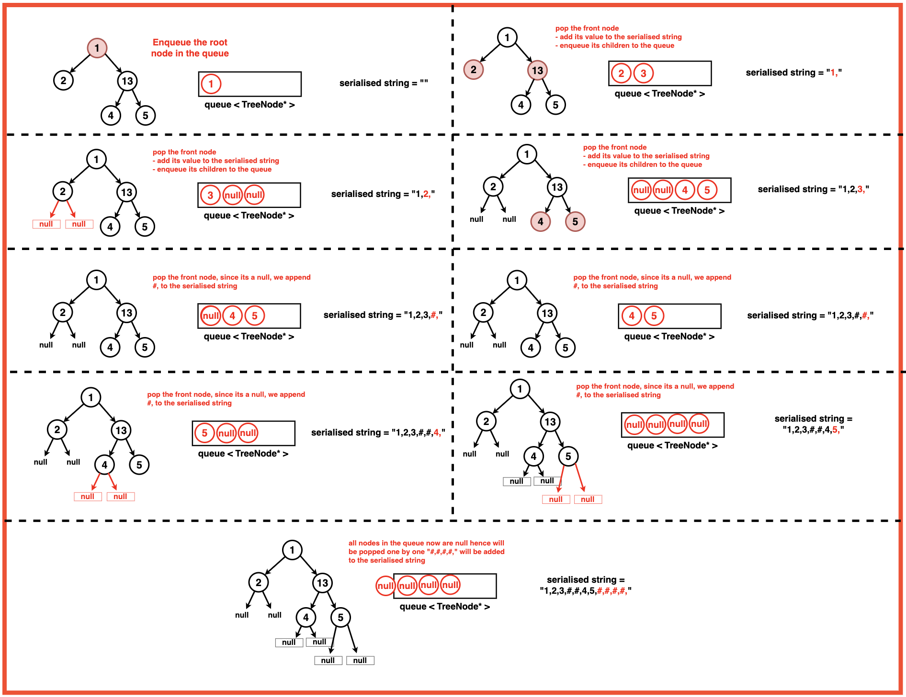
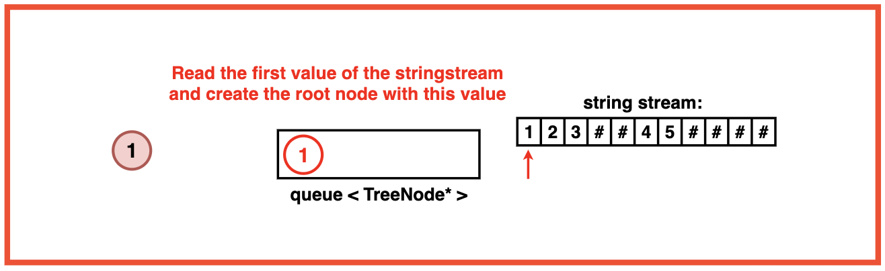
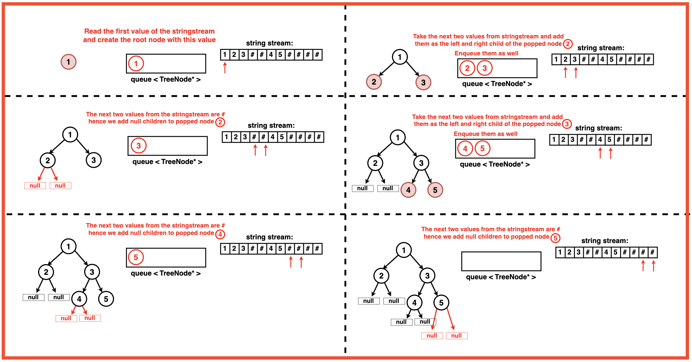

Problem Statement: Given a Binary Tree, design an algorithm to serialise and deserialise it. There is no restriction on how the serialisation and deserialization takes place. But it needs to be ensured that the serialised binary tree can be deserialized to the original tree structure.
Serialisation is the process of translating a data structure or object state into a format that can be stored or transmitted (for example, across a computer network) and reconstructed later. The opposite operation, that is, extracting a data structure from stored information, is deserialization.
Examples
Example 1:Input:Binary Tree: 1 2 3 -1 -1 4 5
Output:After Serialisation: 1,2,3,#,#,4,5,#,#,#,#, After Deserialization: (Original Tree Back)Explanation: Any algorithm that compresses this binary tree to a string which can be transmitted and from which the binary tree can be reconstructed later can be used.
Here we have used a serialisation algorithm based on level order traversal where comma separates the nodes and # denotes null nodes.Example 2:Input:Binary Tree: 1 2 3 -1 4 5 -1
Output :After Serialisation: 1,2,3,#,4,5,#, After Deserialization: (Original Tree Back)Explanation: Any algorithm that compresses this binary tree to a string which can be transmitted and from which the binary tree can be reconstructed later can be used.
Here we have used a serialisation algorithm based on level order traversal where comma separates the nodes and # denotes null nodes. 
Disclaimer: Don’t jump directly to the solution, try it out
yourself first.
Optimal Approach
Algorithm / Intuition
Serialisation:
Step 1: Check if the tree is empty: If the root is null, return an empty string.
Step 2: Initialise an empty string: This string will store the serialised binary tree.
Step 3: Use a queue for level-order traversal: Initialise a queue and enqueue the root.

Step 4: Within the level-order traversal loop:
Dequeue a node from the queue.
If the node is null, append "#" to the string.
If the node is not null, append its data value along with a ‘,’ (comma) to the string. This comma acts as a delimiter that separates the different node values in the string. Enqueue its left and right children.

Step 5: Return the final string containing the serialised representation of the tree.
Deserialization:
Step 1:Check if the serialised data is empty: If it is, return null.
Step 2: Tokenize the serialised data: Use a stringstream to tokenize the input string using the comma as a delimiter.
Step 3:
Read the root value: Read the first token and create the root node with this value.
Step 4:
Use a queue for level-order traversal: Initialise a queue and enqueue the root.

Step 5:
Within the level-order traversal loop:
Dequeue a node from the queue.
Read the value for the left child from the stringstream.
If it is "#", set the left child to null. If it's not "#", create a new node with the value and set it as the left child.
Read the next value in the stringstream for the right child.
If it is "#", set the right child to null. If it's not "#", create a new node with the value and set it as the right child.
Enqueue the left and right children into the queue for further traversal.

Step 6:
Return the reconstructed root: The final result is the root of the reconstructed tree.
Code
#include <iostream>
#include <queue>
#include <sstream>
using namespace std;
// Definition for a
// binary tree node.
struct TreeNode {
int val;
TreeNode* left;
TreeNode* right;
TreeNode(int x) : val(x), left(nullptr), right(nullptr) {}
};
class Solution {
public:
// Encodes the tree into a single string
string serialize(TreeNode* root) {
// Check if the tree is empty
if (!root) {
return "";
}
// Initialize an empty string
// to store the serialized data
string s = "";
// Use a queue for
// level-order traversal
queue<TreeNode*> q;
// Start with the root node
q.push(root);
// Perform level-order traversal
while (!q.empty()) {
// Get the front node in the queue
TreeNode* curNode = q.front();
q.pop();
// Check if the current node is
// null and append "#" to the string
if (curNode == nullptr) {
s += "#,";
} else {
// Append the value of the
// current node to the string
s += to_string(curNode->val) + ",";
// Push the left and right children
// to the queue for further traversal
q.push(curNode->left);
q.push(curNode->right);
}
}
// Return the
// serialized string
return s;
}
// Decode the encoded
// data to a tree
TreeNode* deserialize(string data) {
// Check if the
// serialized data is empty
if (data.empty()) {
return nullptr;
}
// Use a stringstream to
// tokenize the serialized data
stringstream s(data);
string str;
// Read the root value
// from the serialized data
getline(s, str, ',');
TreeNode* root = new TreeNode(stoi(str));
// Use a queue for
// level-order traversal
queue<TreeNode*> q;
// Start with the root node
q.push(root);
// Perform level-order traversal
// to reconstruct the tree
while (!q.empty()) {
// Get the front node in the queue
TreeNode* node = q.front();
q.pop();
// Read the value of the left
// child from the serialized data
getline(s, str, ',');
// If the value is not "#", create a new
// left child and push it to the queue
if (str != "#") {
TreeNode* leftNode = new TreeNode(stoi(str));
node->left = leftNode;
q.push(leftNode);
}
// Read the value of the right child
// from the serialized data
getline(s, str, ',');
// If the value is not "#", create a
// new right child and push it to the queue
if (str != "#") {
TreeNode* rightNode = new TreeNode(stoi(str));
node->right = rightNode;
q.push(rightNode);
}
}
// Return the reconstructed
// root of the tree
return root;
}
};
void inorder(TreeNode* root){
if(!root){
return;
}
inorder(root->left);
cout << root->val << " ";
inorder(root->right);
}
int main() {
TreeNode* root = new TreeNode(1);
root->left = new TreeNode(2);
root->right = new TreeNode(3);
root->right->left = new TreeNode(4);
root->right->right = new TreeNode(5);
Solution solution;
cout << "Orignal Tree: ";
inorder(root);
cout << endl;
string serialized = solution.serialize(root);
cout << "Serialized: " << serialized << endl;
TreeNode* deserialized = solution.deserialize(serialized);
cout << "Tree after deserialisation: ";
inorder(deserialized);
cout << endl;
return 0;
}
import java.util.LinkedList;
import java.util.Queue;
// Definition for a binary tree node.
class TreeNode {
int val;
TreeNode left;
TreeNode right;
TreeNode(int x) { val = x; }
}
public class Solution {
// Encodes the tree into a single string
public String serialize(TreeNode root) {
// Check if the tree is empty
if (root == null) {
return "";
}
// Initialize an empty string
// to store the serialized data
StringBuilder sb = new StringBuilder();
// Use a queue for
// level-order traversal
Queue<TreeNode> q = new LinkedList<>();
// Start with the root node
q.offer(root);
// Perform level-order traversal
while (!q.isEmpty()) {
// Get the front node in the queue
TreeNode curNode = q.poll();
// Check if the current node is
// null and append "#" to the string
if (curNode == null) {
sb.append("#,");
} else {
// Append the value of the
// current node to the string
sb.append(curNode.val).append(",");
// Push the left and right children
// to the queue for further traversal
q.offer(curNode.left);
q.offer(curNode.right);
}
}
// Return the
// serialized string
return sb.toString();
}
// Decode the encoded
// data to a tree
public TreeNode deserialize(String data) {
// Check if the
// serialized data is empty
if (data.isEmpty()) {
return null;
}
// Use a StringBuilder to
// tokenize the serialized data
StringBuilder s = new StringBuilder(data);
// Read the root value
// from the serialized data
int commaIndex = s.indexOf(",");
String str = s.substring(0, commaIndex);
s.delete(0, commaIndex + 1);
TreeNode root = new TreeNode(Integer.parseInt(str));
// Use a queue for
// level-order traversal
Queue<TreeNode> q = new LinkedList<>();
// Start with the root node
q.offer(root);
// Perform level-order traversal
// to reconstruct the tree
while (!q.isEmpty()) {
// Get the front node in the queue
TreeNode node = q.poll();
// Read the value of the left
// child from the serialized data
commaIndex = s.indexOf(",");
str = s.substring(0, commaIndex);
s.delete(0, commaIndex + 1);
// If the value is not "#", create a new
// left child and push it to the queue
if (!str.equals("#")) {
TreeNode leftNode = new TreeNode(Integer.parseInt(str));
node.left = leftNode;
q.offer(leftNode);
}
// Read the value of the right child
// from the serialized data
commaIndex = s.indexOf(",");
str = s.substring(0, commaIndex);
s.delete(0, commaIndex + 1);
// If the value is not "#", create a
// new right child and push it to the queue
if (!str.equals("#")) {
TreeNode rightNode = new TreeNode(Integer.parseInt(str));
node.right = rightNode;
q.offer(rightNode);
}
}
// Return the reconstructed
// root of the tree
return root;
}
public static void inorder(TreeNode root) {
if (root == null) {
return;
}
inorder(root.left);
System.out.print(root.val + " ");
inorder(root.right);
}
public static void main(String[] args) {
TreeNode root = new TreeNode(1);
root.left = new TreeNode(2);
root.right = new TreeNode(3);
root.right.left = new TreeNode(4);
root.right.right = new TreeNode(5);
Solution solution = new Solution();
System.out.print("Orignal Tree: ");
inorder(root);
System.out.println();
String serialized = solution.serialize(root);
System.out.println("Serialized: " + serialized);
TreeNode deserialized = solution.deserialize(serialized);
System.out.print("Tree after deserialization: ");
inorder(deserialized);
System.out.println();
}
}
from queue import Queue
from typing import Optional
# Definition for a
# binary tree node.
class TreeNode:
def __init__(self, x):
self.val = x
self.left = None
self.right = None
class Solution:
def serialize(self, root: Optional[TreeNode]) -> str:
# Check if the tree is empty
if not root:
return ""
# Initialize an empty string
# to store the serialized data
s = ""
# Use a queue for
# level-order traversal
q = Queue()
# Start with the root node
q.put(root)
# Perform level-order traversal
while not q.empty():
# Get the front node in the queue
cur_node = q.get()
# Check if the current node is
# null and append "#" to the string
if not cur_node:
s += "#,"
else:
# Append the value of the
# current node to the string
s += str(cur_node.val) + ","
# Push the left and right children
# to the queue for further traversal
q.put(cur_node.left)
q.put(cur_node.right)
# Return the
# serialized string
return s
def deserialize(self, data: str) -> Optional[TreeNode]:
# Check if the
# serialized data is empty
if not data:
return None
# Use a queue for
# level-order traversal
q = Queue()
# Use a list to store tokens
tokens = data.split(',')
# Read the root value
# from the serialized data
root_val = int(tokens.pop(0))
root = TreeNode(root_val)
q.put(root)
# Perform level-order traversal
# to reconstruct the tree
while not q.empty():
# Get the front node in the queue
node = q.get()
# Read the value of the left
# child from the serialized data
left_val = tokens.pop(0)
# If the value is not "#", create a new
# left child and push it to the queue
if left_val != "#":
left_node = TreeNode(int(left_val))
node.left = left_node
q.put(left_node)
# Read the value of the right child
# from the serialized data
right_val = tokens.pop(0)
# If the value is not "#", create a
# new right child and push it to the queue
if right_val != "#":
right_node = TreeNode(int(right_val))
node.right = right_node
q.put(right_node)
# Return the reconstructed
# root of the tree
return root
def inorder(root):
if not root:
return
inorder(root.left)
print(root.val, end=" ")
inorder(root.right)
if __name__ == "__main__":
root = TreeNode(1)
root.left = TreeNode(2)
root.right = TreeNode(3)
root.right.left = TreeNode(4)
root.right.right = TreeNode(5)
solution = Solution()
print("Original Tree: ", end="")
inorder(root)
print()
serialized = solution.serialize(root)
print("Serialized: " + serialized)
deserialized = solution.deserialize(serialized)
print("Tree after deserialization: ", end="")
inorder(deserialized)
print()
// Definition for a binary tree node.
class TreeNode {
constructor(val) {
this.val = val;
this.left = this.right = null;
}
}
class Solution {
// Encodes the tree into a single string
serialize(root) {
// Check if the tree is empty
if (!root) {
return "";
}
// Initialize an empty string
// to store the serialized data
let s = "";
// Use a queue for
// level-order traversal
let q = [];
// Start with the root node
q.push(root);
// Perform level-order traversal
while (q.length > 0) {
// Get the front node in the queue
let curNode = q.shift();
// Check if the current node is
// null and append "#" to the string
if (curNode === null) {
s += "#,";
} else {
// Append the value of the
// current node to the string
s += curNode.val + ",";
// Push the left and right children
// to the queue for further traversal
q.push(curNode.left);
q.push(curNode.right);
}
}
// Return the
// serialized string
return s;
}
// Decode the encoded
// data to a tree
deserialize(data) {
// Check if the
// serialized data is empty
if (data === "") {
return null;
}
// Use a stringstream to
// tokenize the serialized data
let s = data.split(",");
// Read the root value
// from the serialized data
let rootVal = s.shift();
let root = new TreeNode(parseInt(rootVal));
// Use a queue for
// level-order traversal
let q = [];
// Start with the root node
q.push(root);
// Perform level-order traversal
// to reconstruct the tree
while (q.length > 0) {
// Get the front node in the queue
let node = q.shift();
// Read the value of the left
// child from the serialized data
let leftVal = s.shift();
// If the value is not "#", create a new
// left child and push it to the queue
if (leftVal !== "#") {
let leftNode = new TreeNode(parseInt(leftVal));
node.left = leftNode;
q.push(leftNode);
}
// Read the value of the right child
// from the serialized data
let rightVal = s.shift();
// If the value is not "#", create a
// new right child and push it to the queue
if (rightVal !== "#") {
let rightNode = new TreeNode(parseInt(rightVal));
node.right = rightNode;
q.push(rightNode);
}
}
// Return the reconstructed
// root of the tree
return root;
}
}
function inorder(root) {
if (!root) {
return;
}
inorder(root.left);
console.log(root.val + " ");
inorder(root.right);
}
// Main function
function main() {
let root = new TreeNode(1);
root.left = new TreeNode(2);
root.right = new TreeNode(3);
root.right.left = new TreeNode(4);
root.right.right = new TreeNode(5);
let solution = new Solution();
console.log("Original Tree: ");
inorder(root);
console.log("\n");
let serialized = solution.serialize(root);
console.log("Serialized: " + serialized + "\n");
let deserialized = solution.deserialize(serialized);
console.log("Tree after deserialization: ");
inorder(deserialized);
console.log("\n");
}
// Run the main function
main();
Output
Original Tree: 2 1 4 3 5, Serialized: 1,2,3,#,#,4,5,#,#,#,#, Tree after deserialization: 2 1 4 3 5
Complexity Analysis
Time Complexity: O(N)
serialize function: O(N), where N is the number of nodes in the tree. This is because the function performs a level-order traversal of the tree, visiting each node once.
deserialize function: O(N), where N is the number of nodes in the tree. Similar to the serialize function, it processes each node once while reconstructing the tree.
Space Complexity: O(N)
serialize function: O(N), where N is the maximum number of nodes at any level in the tree. In the worst case, the queue can hold all nodes at the last level of the tree.
deserialize function: O(N), where N is the maximum number of nodes at any level in the tree. The queue is used to store nodes during the reconstruction process, and in the worst case, it may hold all nodes at the last level.
Video Explanation
Special thanks to Gauri Tomar for contributing to this article on takeUforward. If you also wish to share your knowledge with the takeUforward fam, please check out this article